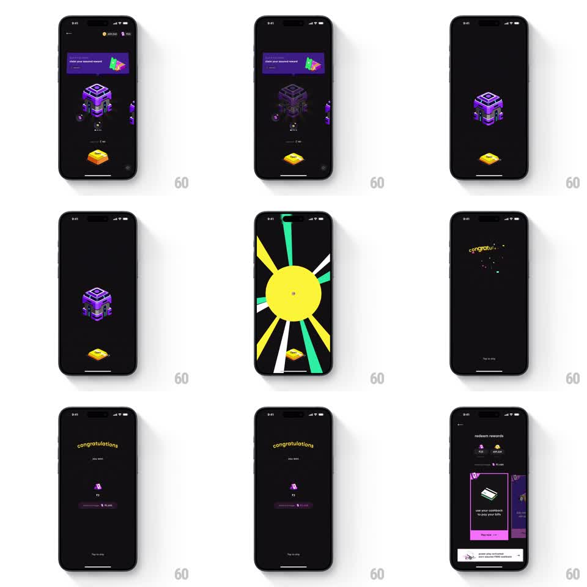

Media
Frame-by-frame

Rebuild this interaction 1:1: CRED's reward chest - tapping the purple banner makes the 3D chest snap open, the screen erupts into a full-bleed yellow sunburst, then settles into a "congratulations" reveal with ticking counters and confetti before landing on the redeem-rewards sheet.

Rebuild this interaction 1:1: CRED's reward chest - tapping the purple banner makes the 3D chest snap open, the screen erupts into a full-bleed yellow sunburst, then settles into a "congratulations" reveal with ticking counters and confetti before landing on the redeem-rewards sheet. ## Integration Integration: stack-agnostic spec - springs given as stiffness/damping, timed motions as duration + curve; map every value to your framework and animation library of choice. ## Scene Black screen with a purple "claim your assured reward" banner up top, a chunky purple 3D chest at center, a gold gem button below. Sequence: the chest scales up and its lid pops; a yellow sunburst (rays in yellow, green, white) floods the screen with the gem visible at the bottom; then a black "congratulations - you won" screen with a small purple gem, the won amount with a ticking counter, and a remaining-balance chip; finally a "redeem rewards" sheet slides up with reward cards and a bottom banner. ## Motion spec Pattern: gamified chest-burst into a ticking reward reveal. - The chest idles with a hover bob (translateY +-6px, 2s sine). On tap it scales up (~1.15) and the lid flips open (rotationX ~-70deg, 300ms, ease-in) with a glow spill from inside. - The burst: radial rays scale from center past the screen edges (~350ms, ease-in, accelerating) with confetti particles (80-120 pieces, gravity, rotation, 1.5s fall). - Cut to the congratulations screen: "congratulations" drops in with a slight bounce, the amount counter ticks up from 0 (count-up ~800ms, ease-out) while its scale pulses on landing, the balance chip fades in below. - "Tap to skip" is live the whole sequence - tapping jumps straight to the final state. - The redeem sheet slides up last (~400ms, ease-out) with its cards staggering in. ## Calibration - The burst must be full-bleed and fast; a slow or inset burst reads as a page transition, not an explosion. - The counter tick is the dopamine beat - give it the full ~800ms even if the number is small. ## Reduced motion Chest crossfades to the congratulations screen; amount appears final; no confetti. ## Don't miss - The yellow sunburst is the brand loud moment - saturated yellow with green/white rays on black, nothing muted. - The gem button stays visible through the burst (it rides the bottom edge) - it is the anchor between scenes.